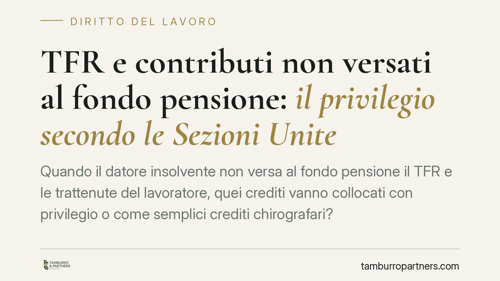
TFR e contributi non versati al fondo pensione: il privilegio secondo le Sezioni Unite
Quando il datore insolvente non versa al fondo pensione il TFR e le trattenute del lavoratore, quei crediti vanno collocati con privilegio o come semplici crediti chirografari? Le …
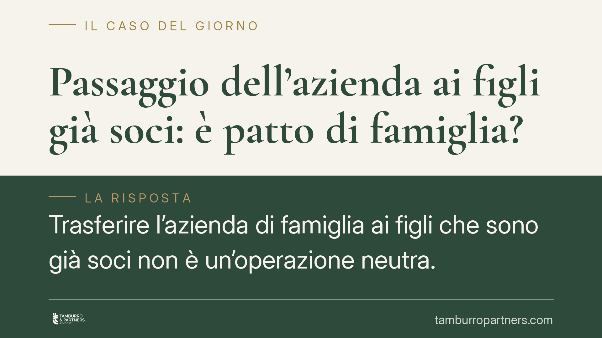
Passaggio dell'azienda ai figli già soci: è patto di famiglia?
Trasferire l'azienda di famiglia ai figli che sono già soci non è un'operazione neutra. Secondo la giurisprudenza di legittimità, quando il passaggio avviene a titolo gratuito tra …
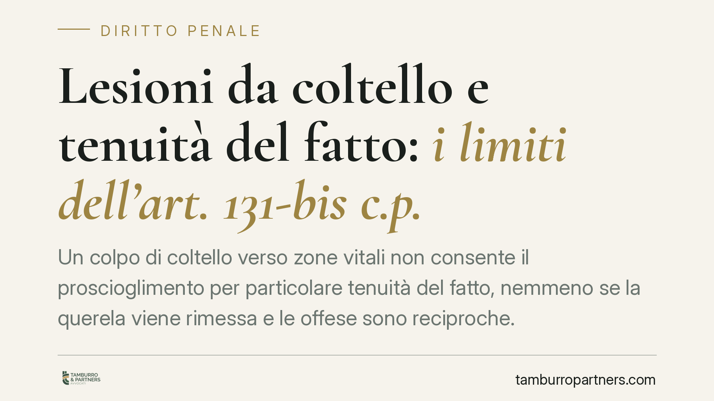
Lesioni da coltello e tenuità del fatto: i limiti dell'art. 131-bis c.p.
Un colpo di coltello verso zone vitali non consente il proscioglimento per particolare tenuità del fatto, nemmeno se la querela viene rimessa e le offese sono reciproche. Lo ribadi…
Ispezioni fiscali senza garanzie: la CEDU condanna l'Italia
La Corte Europea dei Diritti dell'Uomo ha condannato l'Italia: il sistema degli accessi e delle ispezioni fiscali non assicura garanzie sufficienti né un controllo giurisdizionale …
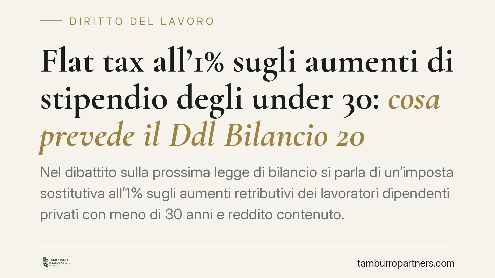
Flat tax all'1% sugli aumenti di stipendio degli under 30: cosa prevede il Ddl Bilancio 2027
Nel dibattito sulla prossima legge di bilancio si parla di un'imposta sostitutiva all'1% sugli aumenti retributivi dei lavoratori dipendenti privati con meno di 30 anni e reddito c…
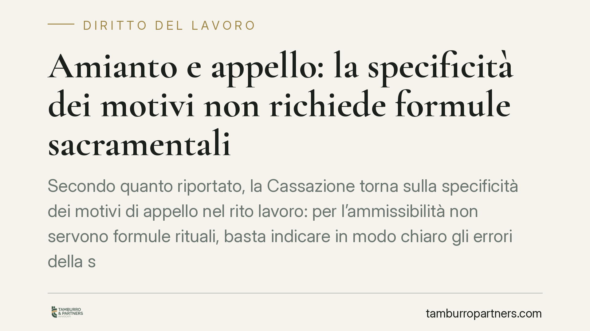
Amianto e appello: la specificità dei motivi non richiede formule sacramentali
Secondo quanto riportato, la Cassazione torna sulla specificità dei motivi di appello nel rito lavoro: per l'ammissibilità non servono formule rituali, basta indicare in modo chiar…
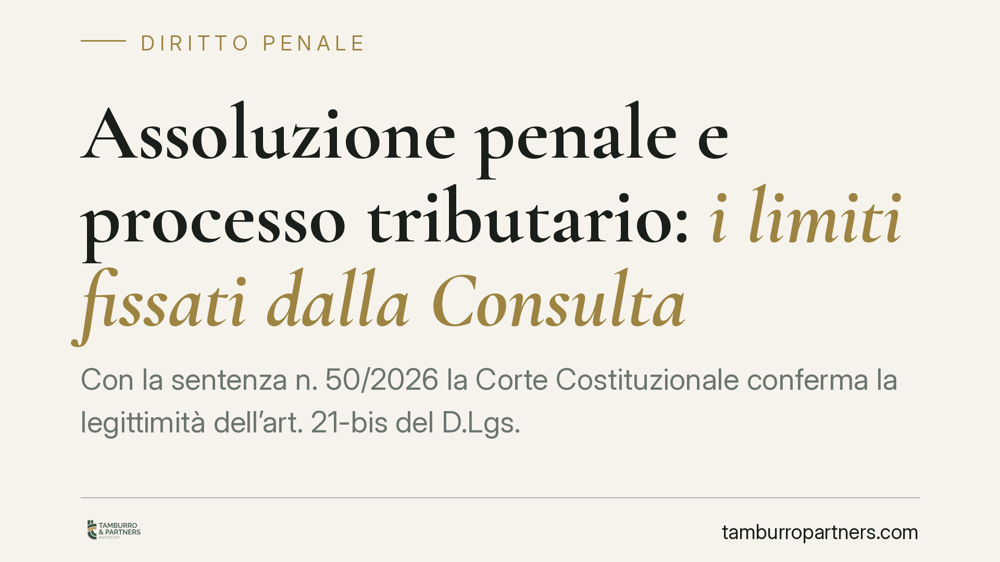
Assoluzione penale e processo tributario: i limiti fissati dalla Consulta
Con la sentenza n. 50/2026 la Corte Costituzionale conferma la legittimità dell'art. 21-bis del D.Lgs. 74/2000, ma ne ridimensiona la portata: l'assoluzione penale vincola il giudi…
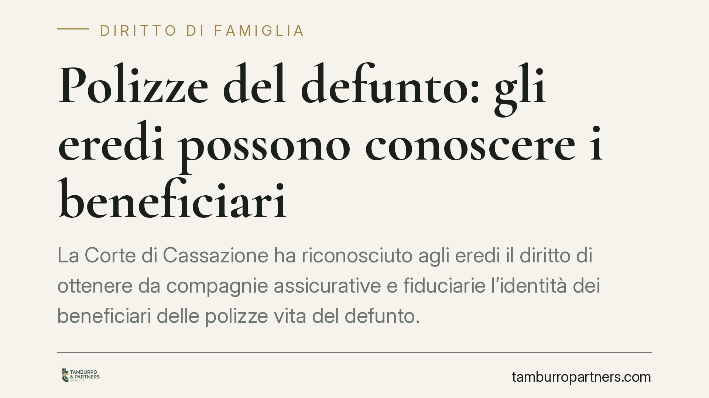
Polizze del defunto: gli eredi possono conoscere i beneficiari
La Corte di Cassazione ha riconosciuto agli eredi il diritto di ottenere da compagnie assicurative e fiduciarie l'identità dei beneficiari delle polizze vita del defunto. Un'inform…
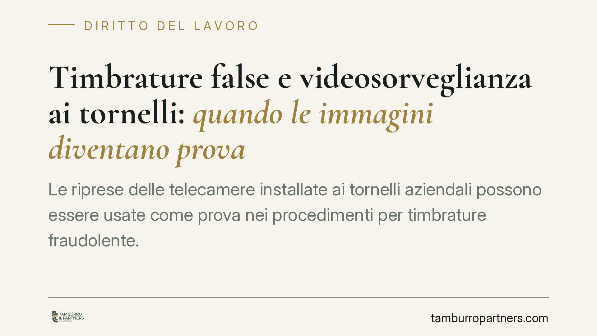
Timbrature false e videosorveglianza ai tornelli: quando le immagini diventano prova
Le riprese delle telecamere installate ai tornelli aziendali possono essere usate come prova nei procedimenti per timbrature fraudolente. La questione tocca due piani distinti: la …
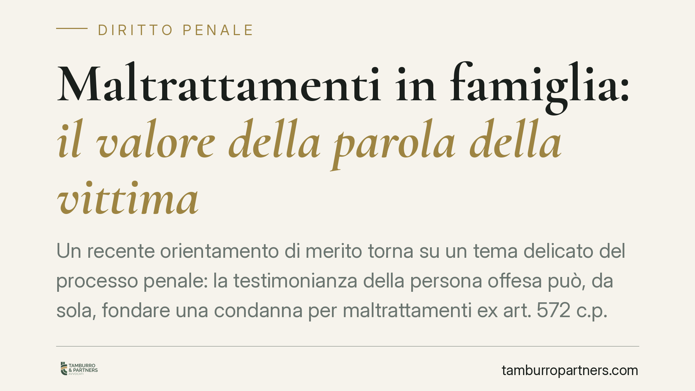
Maltrattamenti in famiglia: il valore della parola della vittima
Un recente orientamento di merito torna su un tema delicato del processo penale: la testimonianza della persona offesa può, da sola, fondare una condanna per maltrattamenti ex art.…
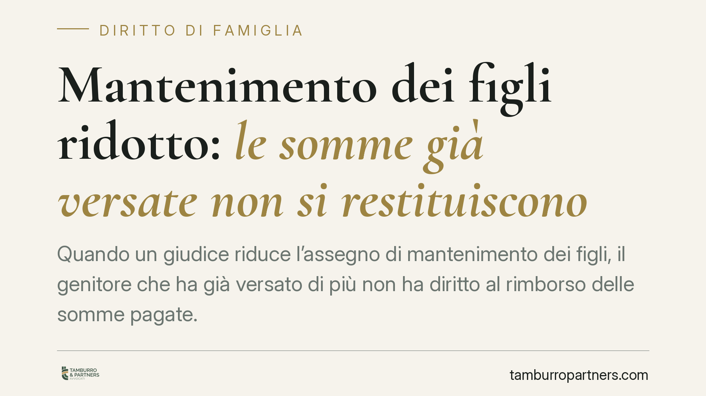
Mantenimento dei figli ridotto: le somme già versate non si restituiscono
Quando un giudice riduce l'assegno di mantenimento dei figli, il genitore che ha già versato di più non ha diritto al rimborso delle somme pagate. Un principio consolidato nella gi…
Casa familiare e figli adulti: quando può decadere l'assegnazione
L'assegnazione della casa familiare non è eterna. Un recente orientamento del Tribunale di Milano ribadisce due principi: decade quando il figlio raggiunge l'autonomia economica, a…
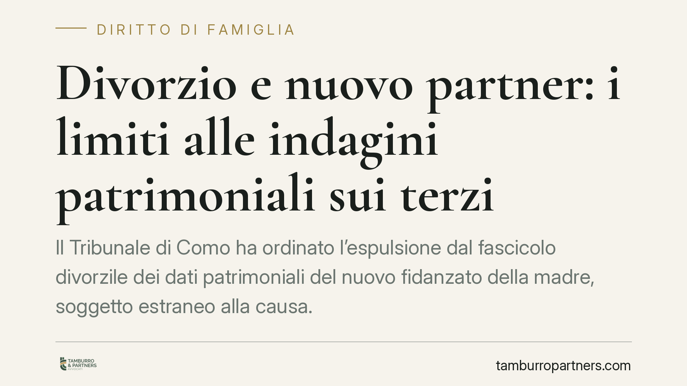
Divorzio e nuovo partner: i limiti alle indagini patrimoniali sui terzi
Il Tribunale di Como ha ordinato l'espulsione dal fascicolo divorzile dei dati patrimoniali del nuovo fidanzato della madre, soggetto estraneo alla causa. La decisione fissa un pri…
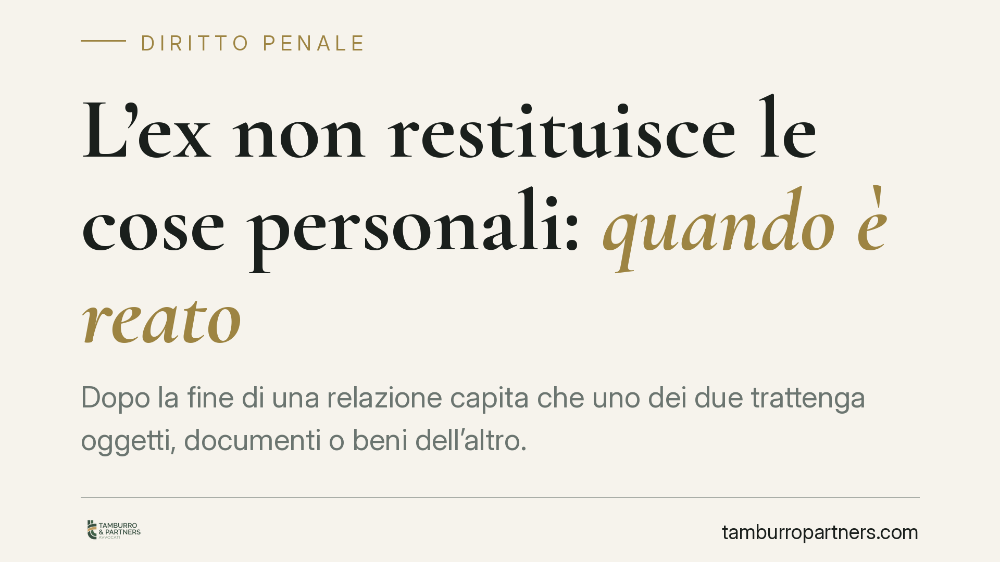
L'ex non restituisce le cose personali: quando è reato
Dopo la fine di una relazione capita che uno dei due trattenga oggetti, documenti o beni dell'altro. Quando il rifiuto di restituire configura un reato? La giurisprudenza penale di…
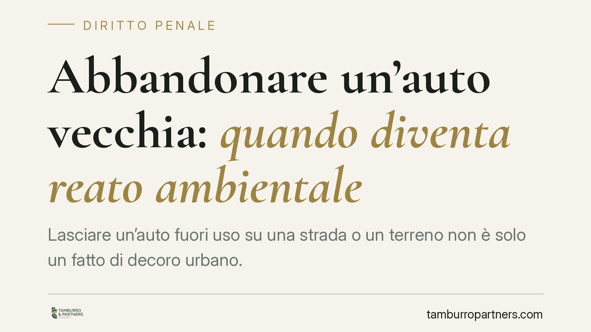
Abbandonare un'auto vecchia: quando diventa reato ambientale
Lasciare un'auto fuori uso su una strada o un terreno non è solo un fatto di decoro urbano. A seconda delle circostanze può configurare un illecito ambientale, con conseguenze dive…
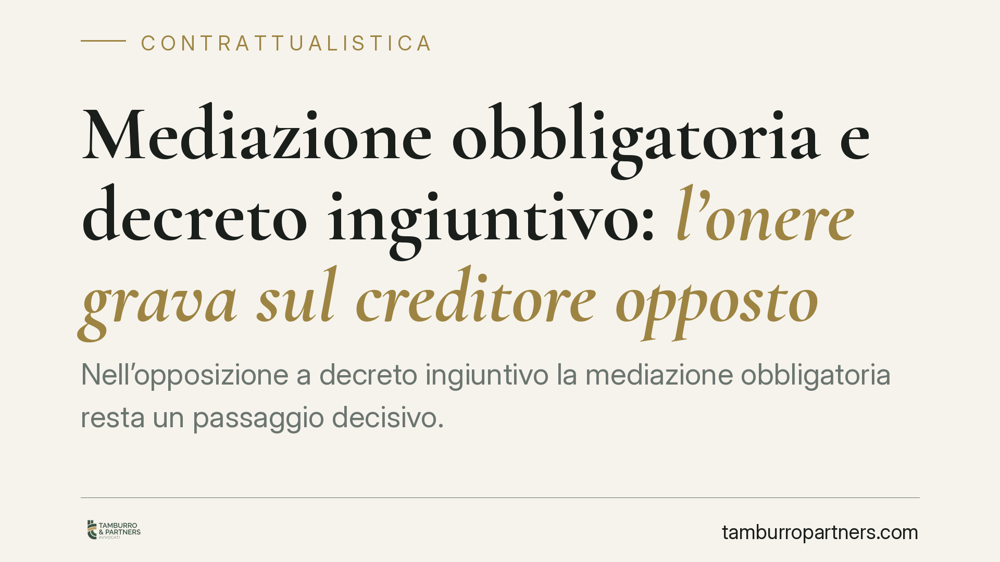
Mediazione obbligatoria e decreto ingiuntivo: l'onere grava sul creditore opposto
Nell'opposizione a decreto ingiuntivo la mediazione obbligatoria resta un passaggio decisivo. Le Sezioni Unite hanno chiarito su chi gravi l'onere di attivarla, mentre la riforma C…

Sharenting: foto dei figli sui social e consenso di entrambi i genitori
Pubblicare le foto dei figli sui social non è una scelta libera di un solo genitore. Con un recente provvedimento, il Garante Privacy ha qualificato lo sharenting come trattamento …

Terrazza a livello: proprietà privata o bene condominiale?
La terrazza a livello non è sempre di chi la calpesta. Con l'ordinanza n. 5253/2026 la Cassazione ribadisce che, se svolge funzione di copertura dell'edificio, si presume condomini…

Legittimo impedimento del difensore: la Cassazione annulla la condanna se l'istanza di rinvio viene ignorata
La Corte di appello non esamina l'istanza di rinvio per legittimo impedimento del difensore, depositata sul portale telematico a causa di una gravidanza a rischio. La Cassazione an…

Offese all'ex coniuge davanti ai figli: quando non c'è risarcimento
La Corte di Cassazione ha chiarito che le offese reciproche scambiate tra ex coniugi durante una lite telefonica, pur ascoltata dai figli, non generano automaticamente un diritto a…

Avviso di convocazione all'erede: senza prova di ricezione la delibera è annullabile
Il Tribunale di Firenze ha annullato una delibera assembleare perché il condominio non ha dimostrato l'effettiva ricezione dell'avviso di convocazione da parte di un erede resident…

Infortuni mortali nel lavoro domestico irregolare: chi risponde penalmente
Quando un lavoratore ingaggiato in nero per un intervento domestico muore sul lavoro, chi risponde penalmente? La Corte di Cassazione ribadisce un principio essenziale: la responsa…

Spese dell'ascensore: paga anche il condomino al piano terra?
Chi abita al piano terra spesso ritiene di non dover pagare nulla per l'ascensore. La realtà normativa è più articolata: l'art. 1124 c.c. distingue tra spese di impianto, manutenzi…

Infortunio sul lavoro: risponde solo chi ha commissionato i lavori
Con la sentenza n. 26904/2026, la Cassazione penale ha ribadito un principio netto: degli obblighi di sicurezza risponde chi ha effettivamente commissionato i lavori, non il sempli…

Stalking via WhatsApp: l'aggravante telematica guarda al mezzo, non al telefono
Le chiamate moleste su WhatsApp configurano stalking aggravato anche se l'apparecchio originario non esiste più. La Cassazione chiarisce che l'aggravante dei mezzi informatici o te…

Dimissioni per giusta causa e NASpI: il caso dei contributi non versati
Chi si dimette di regola non percepisce la NASpI. Esiste pero' un'eccezione: le dimissioni per giusta causa. Quando il datore non paga stipendio o contributi, il lavoratore puo' re…

Distacco dal riscaldamento centralizzato: non basta la dichiarazione del tecnico
La Corte d'Appello di Napoli torna sul distacco dall'impianto di riscaldamento centralizzato. È un diritto del singolo condomino, non soggetto ad autorizzazione dell'assemblea, ma …

Accettazione tacita dell'eredità: quando usare i beni del defunto vincola l'erede
Chi utilizza i beni di un parente defunto può diventarne erede senza firmare alcun atto. Il nostro ordinamento prevede infatti l'accettazione tacita dell'eredità: comportamenti con…

Accettazione tacita di eredità e trascrizione degli immobili
Chi eredita un immobile scopre spesso che non basta comportarsi da erede: per vendere, ipotecare o far valere l'acquisto verso terzi occorre trascrivere l'accettazione dell'eredità…

Mobbing tra colleghi: l'azienda risponde anche delle vessazioni orizzontali
Con l'ordinanza n. 5436/2026 la Cassazione ribadisce che il datore risponde ex art. 2087 c.c. anche quando le vessazioni provengono dai colleghi della vittima. Confermata una conda…